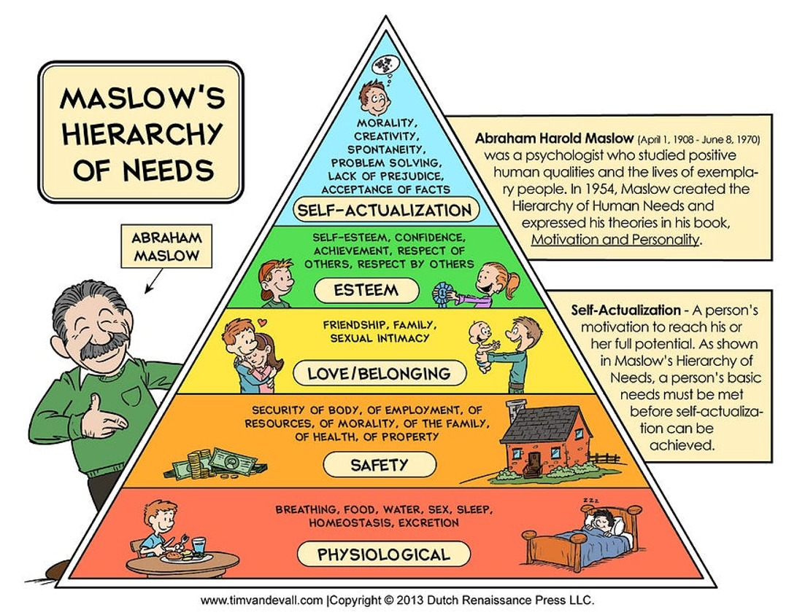

ManoSAMmelan 5.0
Buy Back
Your Time
Money, Freedom &
the Gen Z Equation
Rtn Abhi Sawant
Who am I?
A long journey…
IIT
Yahoo!
Samsung (South Korea)
Startup
Flipkart
Amazon India
Amazon USA
22 years in corporate life
FI at 42
Now: teaching maths & financial literacy
What is money?
What are you really selling?
- Time
- Skills
- Knowledge
- Experience
Money can be earned again. Time cannot.
Money is a means, not the end.
Security
Comfort
Choices
Freedom
It should give us the freedom to choose how we spend our time.
Two generations.
Two different worlds.
Millennials (1981–96)
Gen Z (1997–2012)
Saw the internet rise
Grew up digital
Built careers for stability
Value experiences
Saved for the future
Seek flexibility
Different times. Different choices.
What Gen Z gets right.
- Experiences matter
- Mental health matters
- Work-life balance
- Career flexibility
- Questioning the norm
But there's a catch!
- Instant gratification
- Social media pressure
- Lifestyle inflation
- Easy EMIs & credit
- Buying to impress
Shop
Smart Watch
₹6,999 ₹11,999
EMI from ₹583/mo
Buy Now
Small decisions,
big consequences.
Think about total value, not just price
Price it in hours of your life.
÷₹250 per hour you work₹40,000 a month ÷ 160 hours
=320 hours of your life= 8 weeks at 40 hours = 2 months
+On EMI: 350 hours₹86,600 total, 12 months at ~15%
Every price tag is a time tag.
Money & mental health
- Social comparisonFOMO
- Debtless freedom
- Financial stressanxiety
Your financial situation
is not your identity.

Why does it hurt so much?
- Debt, job worry
shake the Safety layer
- Comparison, FOMO
we try to buy Esteem
Money secures the base.
It can't buy the top.
Stop. Continue. Change.
STOP
- Impulsive buys
- Costly debt
- Comparisons
CONTINUE
- Experiences
- Learning
- Health
CHANGE
- Save first
- Check total cost
- One goal a year
Build your financial foundation.
Know your numbers
Save before you spend
Avoid expensive debt
Invest in yourself
Early in your career, your earning ability is your biggest asset.
Build your earning engine first.
Person A
Optimises a ₹1 lakh portfolio
from 10% to 12% returns
+₹2,000 a year
Person B
Builds skills, and earns
₹20,000 more a month
+₹2,40,000 a year
120×
Communication
Skills & domain
Relationships
Health
Earn more. Don't let lifestyle eat the raise.
Your 30-day money challenge
- 1Calculate your net worth
- 2Track every rupee for 30 days
- 3Find 3 avoidable expenses
- 4Automate a small saving
- 5Set 1 money goal for 12 months
Start today!
If you didn't have to work for money…
A high-paying job you can't leave?
A modest job you truly enjoy?
A business of your own?
A year spent travelling?
More time with family?
Teaching, giving back?
↑ my choice, at 42
What would you choose?
What can you do today to buy back your time tomorrow?
Money is a tool.
Your time is your life.